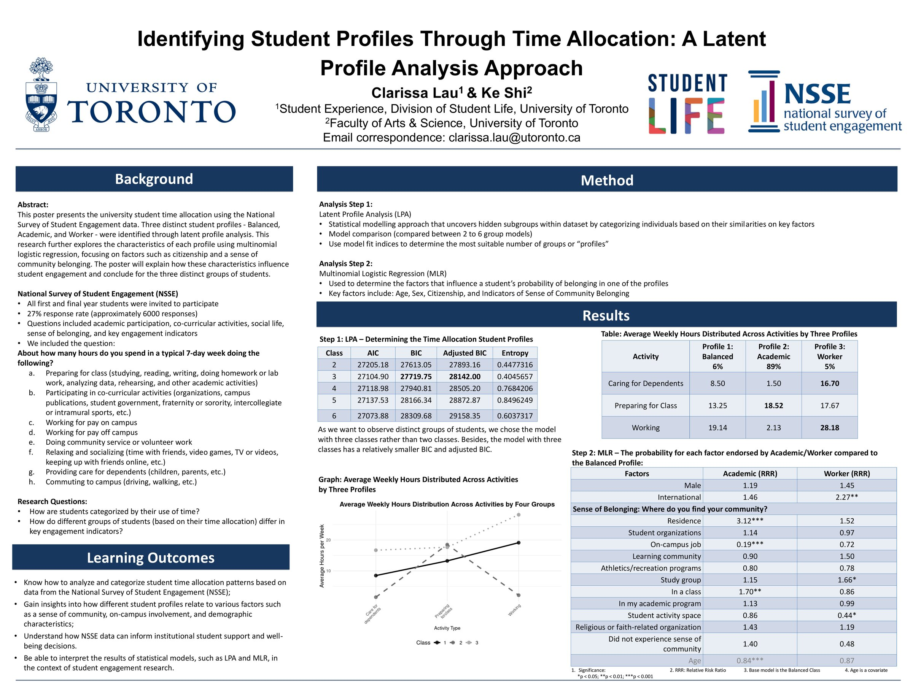

2025 NASPA International Symposium · UofT Student Life
Identifying Student Profiles Through Time Allocation: A Latent Profile Analysis Approach ·
Clarissa Lau & Ke Shi. Used NSSE survey data (~6,000 responses) to identify three student time-allocation
profiles — Balanced, Academic, and Worker — and tested predictors of profile membership via multinomial
logistic regression. Click the poster to zoom; use the Download button above for the full-resolution PDF.